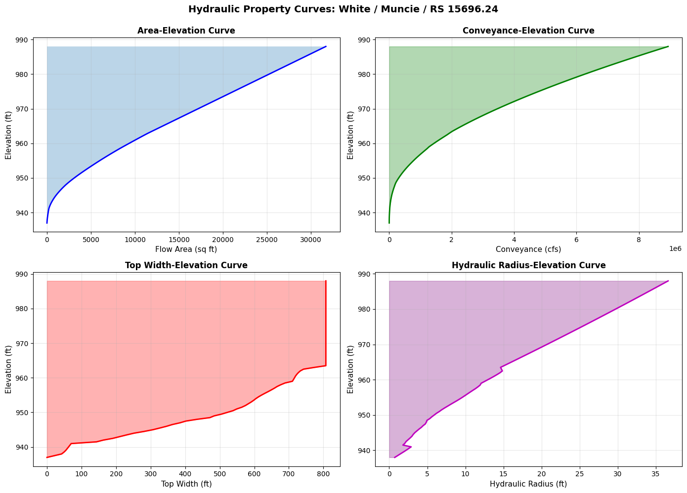

1D Geometry File Parsing¶
This notebook demonstrates parsing and manipulating 1D geometry elements from HEC-RAS plain text geometry files, including: - Cross Section operations - Hydraulic Property Tables (HTAB) - Lateral Structure operations - Batch processing and statistics
Overview¶
This notebook demonstrates extraction of 1D geometry elements from HEC-RAS plain text geometry files (.g## format).
What You'll Learn¶
- Parse cross sections and extract station-elevation data
- Read hydraulic property tables (HTAB)
- Extract lateral structure information
- Perform batch processing
LLM Forward Approach¶
- Verification: Check extracted DataFrames against HEC-RAS GUI
- Visual Outputs: Plot cross sections for review
- Audit Trail: Save extracted data to CSV
Reference Documentation¶
# =============================================================================
# DEVELOPMENT MODE TOGGLE
# =============================================================================
from pathlib import Path
import sys
USE_LOCAL_SOURCE = False # <-- TOGGLE THIS
if USE_LOCAL_SOURCE:
local_path = str(Path.cwd().parent)
if local_path not in sys.path:
sys.path.insert(0, local_path)
print(f"📁 LOCAL SOURCE MODE: Loading from {local_path}/ras_commander")
else:
print("📦 PIP PACKAGE MODE: Loading installed ras-commander")
# Import RAS Commander geometry modules
from ras_commander import (
RasGeometry, GeomLateral,
RasGeometryUtils,
HdfHydraulicTables,
RasExamples,
init_ras_project,
RasCmdr,
ras
)
# Additional imports
import pandas as pd
import numpy as np
import matplotlib.pyplot as plt
from IPython import display
# Verify which version loaded
import ras_commander
print(f"✓ Loaded: {ras_commander.__file__}")
print(f"Working directory: {Path.cwd()}")
📦 PIP PACKAGE MODE: Loading installed ras-commander
✓ Loaded: c:\Users\billk_clb\anaconda3\envs\rascmdr_piptest\Lib\site-packages\ras_commander\__init__.py
Working directory: c:\GH\ras-commander\examples
Parameters¶
Configure these values to customize the notebook for your project.
# =============================================================================
# PARAMETERS - Edit these to customize the notebook
# =============================================================================
# Project Configuration
PROJECT_NAME = "Muncie" # Example project to extract
RAS_VERSION = "6.6" # HEC-RAS version (6.3, 6.5, 6.6, etc.)
# Geometry Settings
GEOM_NUMBER = "01" # Geometry file number
RIVER = "White" # River name for cross section queries
REACH = "West Fork" # Reach name
CROSS_SECTION = "10457.31" # Cross section station (RS)
Package Setup and Imports¶
# NOTE: This cell runs HEC-RAS and may take 1-2 minutes!
# Uncomment to generate preprocessed HDF
# Extract and initialize project
project_path = RasExamples.extract_project(PROJECT_NAME, suffix="201")
init_ras_project(project_path, RAS_VERSION)
# Compute plan to generate preprocessed geometry HDF
print("Computing plan 01 to generate preprocessed geometry HDF...")
print("(This may take 1-2 minutes)\n")
result = RasCmdr.compute_plan("01")
if result:
geom_hdf = ras.geom_df.iloc[0]['full_path'] + '.hdf'
print(f"\n✓ Preprocessed HDF created: {Path(geom_hdf).name}")
print(f" Location: {geom_hdf}")
else:
print("ERROR: Plan computation failed")
2026-01-12 00:04:49 - ras_commander.RasExamples - INFO - Found zip file: C:\Users\billk_clb\anaconda3\envs\rascmdr_piptest\Lib\site-packages\examples\Example_Projects_6_6.zip
2026-01-12 00:04:49 - ras_commander.RasExamples - INFO - Loading project data from CSV...
2026-01-12 00:04:49 - ras_commander.RasExamples - INFO - Loaded 68 projects from CSV.
2026-01-12 00:04:49 - ras_commander.RasExamples - INFO - ----- RasExamples Extracting Project -----
2026-01-12 00:04:49 - ras_commander.RasExamples - INFO - Extracting project 'Muncie' as 'Muncie_201'
2026-01-12 00:04:49 - ras_commander.RasExamples - INFO - Successfully extracted project 'Muncie' to C:\Users\billk_clb\anaconda3\envs\rascmdr_piptest\Lib\site-packages\examples\example_projects\Muncie_201
2026-01-12 00:04:49 - ras_commander.RasMap - INFO - Successfully parsed RASMapper file: C:\Users\billk_clb\anaconda3\envs\rascmdr_piptest\Lib\site-packages\examples\example_projects\Muncie_201\Muncie.rasmap
2026-01-12 00:04:49 - ras_commander.RasPrj - INFO - Updated results_df with 3 plan(s)
2026-01-12 00:04:49 - ras_commander.RasCmdr - INFO - Using ras_object with project folder: C:\Users\billk_clb\anaconda3\envs\rascmdr_piptest\Lib\site-packages\examples\example_projects\Muncie_201
2026-01-12 00:04:49 - ras_commander.RasCmdr - INFO - Running HEC-RAS from the Command Line:
2026-01-12 00:04:49 - ras_commander.RasCmdr - INFO - Running command: "C:\Program Files (x86)\HEC\HEC-RAS\6.6\Ras.exe" -c "C:\Users\billk_clb\anaconda3\envs\rascmdr_piptest\Lib\site-packages\examples\example_projects\Muncie_201\Muncie.prj" "C:\Users\billk_clb\anaconda3\envs\rascmdr_piptest\Lib\site-packages\examples\example_projects\Muncie_201\Muncie.p01"
Computing plan 01 to generate preprocessed geometry HDF...
(This may take 1-2 minutes)
2026-01-12 00:05:05 - ras_commander.RasCmdr - INFO - HEC-RAS execution completed for plan: 01
2026-01-12 00:05:05 - ras_commander.RasCmdr - INFO - Total run time for plan 01: 15.24 seconds
2026-01-12 00:05:05 - ras_commander.hdf.HdfResultsPlan - INFO - Using existing Path object HDF file: C:\Users\billk_clb\anaconda3\envs\rascmdr_piptest\Lib\site-packages\examples\example_projects\Muncie_201\Muncie.p01.hdf
2026-01-12 00:05:05 - ras_commander.hdf.HdfResultsPlan - INFO - Final validated file path: C:\Users\billk_clb\anaconda3\envs\rascmdr_piptest\Lib\site-packages\examples\example_projects\Muncie_201\Muncie.p01.hdf
2026-01-12 00:05:05 - ras_commander.hdf.HdfResultsPlan - INFO - Reading computation messages from HDF: Muncie.p01.hdf
2026-01-12 00:05:05 - ras_commander.hdf.HdfResultsPlan - INFO - Successfully extracted 2578 characters from HDF
2026-01-12 00:05:05 - ras_commander.hdf.HdfResultsPlan - INFO - Using existing Path object HDF file: C:\Users\billk_clb\anaconda3\envs\rascmdr_piptest\Lib\site-packages\examples\example_projects\Muncie_201\Muncie.p01.hdf
2026-01-12 00:05:05 - ras_commander.hdf.HdfResultsPlan - INFO - Final validated file path: C:\Users\billk_clb\anaconda3\envs\rascmdr_piptest\Lib\site-packages\examples\example_projects\Muncie_201\Muncie.p01.hdf
2026-01-12 00:05:05 - ras_commander.hdf.HdfResultsPlan - INFO - Extracting Plan Information from: Muncie.p01.hdf
2026-01-12 00:05:05 - ras_commander.hdf.HdfResultsPlan - INFO - Plan Name: Unsteady Multi 9-SA run
2026-01-12 00:05:05 - ras_commander.hdf.HdfResultsPlan - INFO - Simulation Duration (hours): 24.0
2026-01-12 00:05:05 - ras_commander.hdf.HdfResultsPlan - INFO - Using existing Path object HDF file: C:\Users\billk_clb\anaconda3\envs\rascmdr_piptest\Lib\site-packages\examples\example_projects\Muncie_201\Muncie.p01.hdf
2026-01-12 00:05:05 - ras_commander.hdf.HdfResultsPlan - INFO - Final validated file path: C:\Users\billk_clb\anaconda3\envs\rascmdr_piptest\Lib\site-packages\examples\example_projects\Muncie_201\Muncie.p01.hdf
c:\Users\billk_clb\anaconda3\envs\rascmdr_piptest\Lib\site-packages\ras_commander\RasPrj.py:1514: FutureWarning: The behavior of DataFrame concatenation with empty or all-NA entries is deprecated. In a future version, this will no longer exclude empty or all-NA columns when determining the result dtypes. To retain the old behavior, exclude the relevant entries before the concat operation.
self.results_df = pd.concat([self.results_df, new_results], ignore_index=True)
2026-01-12 00:05:05 - ras_commander.RasPrj - INFO - Updated results_df with 1 plan(s)
✓ Preprocessed HDF created: Muncie.g01.hdf
Location: C:\Users\billk_clb\anaconda3\envs\rascmdr_piptest\Lib\site-packages\examples\example_projects\Muncie_201\Muncie.g01.hdf
# Display results summary from results_df
# This shows execution status, timing, and any errors/warnings for each plan
ras.results_df[['plan_number', 'plan_title', 'completed', 'has_errors', 'has_warnings', 'runtime_complete_process_hours']]
| plan_number | plan_title | completed | has_errors | has_warnings | runtime_complete_process_hours | |
|---|---|---|---|---|---|---|
| 0 | 03 | Unsteady Run with 2D 50ft Grid | False | False | False | NaN |
| 1 | 04 | Unsteady Run with 2D 50ft User n Value R | False | False | False | NaN |
| 2 | 01 | Unsteady Multi 9-SA run | True | False | False | 0.003685 |
Section 1: Cross Section Operations¶
Cross sections define the channel geometry in 1D models. We'll explore how to list cross sections, extract their station/elevation data, and modify them.
Verification: Cross Section Data Quality¶
After extracting cross sections, verify:
- Count Matches: Number matches HEC-RAS GUI
- Station Range: Values in expected range
- Data Completeness: No missing values
- Units: Stations and elevations in correct units
Common Issues¶
Issue: FileNotFoundError - Fix: Verify geometry file path
Issue: Empty DataFrame - Fix: Check river/reach names (case-sensitive)
Issue: Station-elevation gaps - Fix: Verify geometry in HEC-RAS GUI
| plan_number | unsteady_number | geometry_number | Plan Title | Program Version | Short Identifier | Simulation Date | Computation Interval | Mapping Interval | Run HTab | ... | DSS File | Friction Slope Method | UNET D2 SolverType | UNET D2 Name | HDF_Results_Path | Geom File | Geom Path | Flow File | Flow Path | full_path | |
|---|---|---|---|---|---|---|---|---|---|---|---|---|---|---|---|---|---|---|---|---|---|
| 0 | 01 | 01 | 01 | Unsteady Multi 9-SA run | 5.00 | 9-SAs | 02JAN1900,0000,02JAN1900,2400 | 15SEC | 5MIN | 1 | ... | dss | 1 | NaN | NaN | C:\Users\billk_clb\anaconda3\envs\rascmdr_pipt... | 01 | C:\Users\billk_clb\anaconda3\envs\rascmdr_pipt... | 01 | C:\Users\billk_clb\anaconda3\envs\rascmdr_pipt... | C:\Users\billk_clb\anaconda3\envs\rascmdr_pipt... |
| 1 | 03 | 01 | 02 | Unsteady Run with 2D 50ft Grid | 5.10 | 2D 50ft Grid | 02JAN1900,0000,02JAN1900,2400 | 10SEC | 5MIN | -1 | ... | dss | 1 | Pardiso (Direct) | 2D Interior Area | None | 02 | C:\Users\billk_clb\anaconda3\envs\rascmdr_pipt... | 01 | C:\Users\billk_clb\anaconda3\envs\rascmdr_pipt... | C:\Users\billk_clb\anaconda3\envs\rascmdr_pipt... |
| 2 | 04 | 01 | 04 | Unsteady Run with 2D 50ft User n Value R | 5.10 | 50ft User n Regions | 02JAN1900,0000,02JAN1900,2400 | 10SEC | 5MIN | 1 | ... | dss | 1 | Pardiso (Direct) | 2D Interior Area | None | 04 | C:\Users\billk_clb\anaconda3\envs\rascmdr_pipt... | 01 | C:\Users\billk_clb\anaconda3\envs\rascmdr_pipt... | C:\Users\billk_clb\anaconda3\envs\rascmdr_pipt... |
3 rows × 29 columns
| geom_file | geom_number | full_path | hdf_path | |
|---|---|---|---|---|
| 0 | g01 | 01 | C:\Users\billk_clb\anaconda3\envs\rascmdr_pipt... | C:\Users\billk_clb\anaconda3\envs\rascmdr_pipt... |
| 1 | g02 | 02 | C:\Users\billk_clb\anaconda3\envs\rascmdr_pipt... | C:\Users\billk_clb\anaconda3\envs\rascmdr_pipt... |
| 2 | g04 | 04 | C:\Users\billk_clb\anaconda3\envs\rascmdr_pipt... | C:\Users\billk_clb\anaconda3\envs\rascmdr_pipt... |
1.1 Setup: Define Geometry File Path¶
# Lookup geometry file path and HDF path from ras.geom_df by geom_number
geom_number = "01"
geom_row = ras.geom_df.loc[ras.geom_df['geom_number'] == geom_number].iloc[0]
geom_file = Path(geom_row["full_path"])
geom_hdf = Path(geom_row["hdf_path"])
print(f"Geometry file: {geom_file}")
print(f"File exists: {geom_file.exists()}")
if geom_file.exists():
print(f"File size: {geom_file.stat().st_size / 1024:.1f} KB")
else:
print("Geometry file does not exist!")
print(f"HDF file: {geom_hdf}")
print(f"HDF exists: {geom_hdf.exists()}")
Geometry file: C:\Users\billk_clb\anaconda3\envs\rascmdr_piptest\Lib\site-packages\examples\example_projects\Muncie_201\Muncie.g01
File exists: True
File size: 186.4 KB
HDF file: C:\Users\billk_clb\anaconda3\envs\rascmdr_piptest\Lib\site-packages\examples\example_projects\Muncie_201\Muncie.g01.hdf
HDF exists: True
1.2 List All Cross Sections¶
# Extract all cross sections
xs_df = RasGeometry.get_cross_sections(geom_file)
print(f"Total cross sections: {len(xs_df)}")
print(f"Rivers: {xs_df['River'].unique().tolist()}")
print(f"Reaches: {xs_df['Reach'].unique().tolist()}")
print("\nFirst 10 cross sections:")
display.display(xs_df)
2026-01-12 00:05:05 - ras_commander.geom.GeomCrossSection - INFO - Extracted 63 cross sections from Muncie.g01
Total cross sections: 63
Rivers: ['White']
Reaches: ['Muncie']
First 10 cross sections:
| River | Reach | RS | Type | Length_Left | Length_Channel | Length_Right | NodeName | |
|---|---|---|---|---|---|---|---|---|
| 0 | White | Muncie | 15696.24 | 1 | 228.66 | 210.73 | 167.84 | |
| 1 | White | Muncie | 15485.51 | 1 | 121.23 | 115.09 | 103.79 | |
| 2 | White | Muncie | 15370.43 | 1 | 174.81 | 165.14 | 117.82 | |
| 3 | White | Muncie | 15205.29 | 1 | 216.56 | 192.09 | 159.11 | |
| 4 | White | Muncie | 15013.20 | 1 | 98.06 | 95.84 | 84.00 | |
| ... | ... | ... | ... | ... | ... | ... | ... | ... |
| 58 | White | Muncie | 1469.294 | 1 | 326.76 | 295.08 | 293.53 | |
| 59 | White | Muncie | 1174.213 | 1 | 359.34 | 308.67 | 300.36 | |
| 60 | White | Muncie | 865.5413 | 1 | 323.21 | 295.42 | 289.85 | |
| 61 | White | Muncie | 570.1187 | 1 | 383.75 | 332.47 | 321.89 | |
| 62 | White | Muncie | 237.6455 | 1 | 67.07 | 237.65 | 257.89 |
63 rows × 8 columns
1.3 Extract Station/Elevation for a Cross Section¶
# Select first cross section
first_xs = xs_df.iloc[0]
river = first_xs['River']
reach = first_xs['Reach']
rs = first_xs['RS']
print(f"Selected cross section: {river} / {reach} / RS {rs}")
# Extract station/elevation data
sta_elev = RasGeometry.get_station_elevation(geom_file, river, reach, rs)
print(f"\nStation/Elevation Data:")
print(f" Points: {len(sta_elev)}")
print(f" Station range: {sta_elev['Station'].min():.2f} to {sta_elev['Station'].max():.2f} ft")
print(f" Elevation range: {sta_elev['Elevation'].min():.2f} to {sta_elev['Elevation'].max():.2f} ft")
print(f" Channel width: {sta_elev['Station'].max() - sta_elev['Station'].min():.2f} ft")
print("\nFirst 10 points:")
display.display(sta_elev.head(10))
2026-01-12 00:05:05 - ras_commander.geom.GeomCrossSection - INFO - Extracted 134 station/elevation pairs for White/Muncie/RS 15696.24
Selected cross section: White / Muncie / RS 15696.24
Station/Elevation Data:
Points: 134
Station range: 0.00 to 807.07 ft
Elevation range: 936.99 to 963.04 ft
Channel width: 807.07 ft
First 10 points:
| Station | Elevation | |
|---|---|---|
| 0 | 0.00 | 963.04 |
| 1 | 27.20 | 963.04 |
| 2 | 32.64 | 963.02 |
| 3 | 38.08 | 962.85 |
| 4 | 43.52 | 962.71 |
| 5 | 54.40 | 962.71 |
| 6 | 59.84 | 962.61 |
| 7 | 65.28 | 962.47 |
| 8 | 70.72 | 962.23 |
| 9 | 76.16 | 961.81 |
1.4 Visualize Cross Section Profile¶
# Plot cross section profile
fig, ax = plt.subplots(figsize=(12, 6))
ax.plot(sta_elev['Station'], sta_elev['Elevation'], 'b-', linewidth=2, label='Cross Section')
ax.fill_between(sta_elev['Station'], sta_elev['Elevation'],
sta_elev['Elevation'].min() - 5,
alpha=0.3)
ax.grid(True, alpha=0.3)
ax.set_xlabel('Station (ft)', fontsize=12)
ax.set_ylabel('Elevation (ft)', fontsize=12)
ax.set_title(f'Cross Section Profile: {river} / {reach} / RS {rs}',
fontsize=14, fontweight='bold')
# Add statistics annotation
stats_text = f'Points: {len(sta_elev)}\n'
stats_text += f'Width: {sta_elev["Station"].max() - sta_elev["Station"].min():.1f} ft\n'
stats_text += f'Elev Range: {sta_elev["Elevation"].min():.1f} - {sta_elev["Elevation"].max():.1f} ft'
ax.text(0.02, 0.98, stats_text,
transform=ax.transAxes,
verticalalignment='top',
bbox=dict(boxstyle='round', facecolor='wheat', alpha=0.5),
fontsize=10)
plt.tight_layout()
plt.show()

1.5 Modify Cross Section Geometry (Round-Trip Example)¶
# NOTE: This cell modifies the geometry file!
# Uncomment to actually modify the file (backup is created automatically)
# # Read original data
# original_sta_elev = RasGeometry.get_station_elevation(geom_file, river, reach, rs)
# print(f"Original mean elevation: {original_sta_elev['Elevation'].mean():.3f} ft")
# # Modify elevations (raise by 1 foot)
# modified_sta_elev = original_sta_elev.copy()
# modified_sta_elev['Elevation'] += 1.0
# # Write back to file (creates .bak backup automatically)
# RasGeometry.set_station_elevation(geom_file, river, reach, rs, modified_sta_elev)
# print(f"\n✓ Modified geometry written to file")
# print(f" Backup created: {geom_file}.bak")
# # Verify round-trip
# readback_sta_elev = RasGeometry.get_station_elevation(geom_file, river, reach, rs)
# print(f"\nReadback mean elevation: {readback_sta_elev['Elevation'].mean():.3f} ft")
# print(f"Difference: {abs(modified_sta_elev['Elevation'].mean() - readback_sta_elev['Elevation'].mean()):.6f} ft")
# # Restore original (using backup)
# import shutil
# shutil.copy2(str(geom_file) + '.bak', geom_file)
# print(f"\n✓ Original geometry restored from backup")
print("Modification example is commented out to protect geometry file.")
print("Uncomment the code above to test round-trip operations.")
Modification example is commented out to protect geometry file.
Uncomment the code above to test round-trip operations.
Section 2: Hydraulic Property Tables (HTAB)¶
Property tables contain preprocessed hydraulic properties (area, conveyance, wetted perimeter, etc.) as functions of elevation. These enable hydraulic analysis without re-running HEC-RAS.
IMPORTANT: Property tables only exist in preprocessed geometry HDF files. Run RasCmdr.compute_plan() to generate them.
Understanding Hydraulic Property Tables¶
HEC-RAS pre-computes hydraulic properties at discrete elevations.
Why HTABs Matter: - Used during flow computations - Interpolation between table values - Insufficient range causes errors
Verification¶
- Check elevation range covers expected WSE
- Verify monotonic increase in area/conveyance
2.1 Generate Preprocessed Geometry HDF¶
2.2 Extract HTAB for a Cross Section¶
# Extract hydraulic property table using first cross section from current project
# (Uses river/reach/rs from cell 16 that were dynamically extracted)
htab = HdfHydraulicTables.get_xs_htab(geom_hdf, river, reach, str(rs))
print(f"Hydraulic Property Table for {river} / {reach} / RS {rs}")
print(f"\nTable dimensions: {len(htab)} elevations × {len(htab.columns)} properties")
print(f"Elevation range: {htab['Elevation'].min():.2f} to {htab['Elevation'].max():.2f} ft")
print("\nAvailable properties:")
for col in htab.columns:
print(f" - {col}")
print("\nFirst 5 rows:")
display.display(htab.head())
2026-01-12 00:05:05 - ras_commander.hdf.HdfHydraulicTables - INFO - Using existing Path object HDF file: C:\Users\billk_clb\anaconda3\envs\rascmdr_piptest\Lib\site-packages\examples\example_projects\Muncie_201\Muncie.g01.hdf
2026-01-12 00:05:05 - ras_commander.hdf.HdfHydraulicTables - INFO - Final validated file path: C:\Users\billk_clb\anaconda3\envs\rascmdr_piptest\Lib\site-packages\examples\example_projects\Muncie_201\Muncie.g01.hdf
2026-01-12 00:05:05 - ras_commander.hdf.HdfHydraulicTables - INFO - Extracted property table: 102 elevations × 26 properties
2026-01-12 00:05:05 - ras_commander.hdf.HdfHydraulicTables - INFO - Extracted HTAB for White/Muncie/RS 15696.24: 102 elevations, 26 properties
Hydraulic Property Table for White / Muncie / RS 15696.24
Table dimensions: 102 elevations × 26 properties
Elevation range: 936.99 to 987.99 ft
Available properties:
- Elevation
- Area_LOB
- Area_Chan
- Area_ROB
- Area_Ineff_LOB
- Area_Ineff_Chan
- Area_Ineff_ROB
- Conv_LOB
- Conv_Chan
- Conv_ROB
- WP_LOB
- WP_Chan
- WP_ROB
- Mann_N_LOB
- Mann_N_Chan
- Mann_N_ROB
- Top_Width
- Top_Width_LOB
- Top_Width_Chan
- Top_Width_ROB
- Alpha
- Storage_Area
- Beta
- Area_Total
- Conveyance_Total
- Wetted_Perimeter_Total
First 5 rows:
| Elevation | Area_LOB | Area_Chan | Area_ROB | Area_Ineff_LOB | Area_Ineff_Chan | Area_Ineff_ROB | Conv_LOB | Conv_Chan | Conv_ROB | ... | Top_Width | Top_Width_LOB | Top_Width_Chan | Top_Width_ROB | Alpha | Storage_Area | Beta | Area_Total | Conveyance_Total | Wetted_Perimeter_Total | |
|---|---|---|---|---|---|---|---|---|---|---|---|---|---|---|---|---|---|---|---|---|---|
| 0 | 936.98999 | 0.0 | 0.000000 | 0.0 | 0.0 | 0.000000 | 0.0 | 0.0 | 0.000000 | 0.0 | ... | 0.000000 | 0.0 | 0.000000 | 0.0 | 1.0 | 0.0 | 1.0 | 0.000000 | 0.000000 | 0.000000 |
| 1 | 937.98999 | 0.0 | 30.739735 | 0.0 | 0.0 | 30.739735 | 0.0 | 0.0 | 920.303528 | 0.0 | ... | 42.387573 | 0.0 | 42.387573 | 0.0 | 1.0 | 0.0 | 1.0 | 30.739735 | 920.303528 | 42.487072 |
| 2 | 938.48999 | 0.0 | 53.730839 | 0.0 | 0.0 | 53.730839 | 0.0 | 0.0 | 2119.378174 | 0.0 | ... | 48.922852 | 0.0 | 48.922852 | 0.0 | 1.0 | 0.0 | 1.0 | 53.730839 | 2119.378174 | 49.107693 |
| 3 | 938.98999 | 0.0 | 79.565048 | 0.0 | 0.0 | 79.565048 | 0.0 | 0.0 | 3805.888184 | 0.0 | ... | 54.168121 | 0.0 | 54.168121 | 0.0 | 1.0 | 0.0 | 1.0 | 79.565048 | 3805.888184 | 54.453392 |
| 4 | 939.48999 | 0.0 | 107.678528 | 0.0 | 0.0 | 107.678528 | 0.0 | 0.0 | 5996.459961 | 0.0 | ... | 58.259857 | 0.0 | 58.259857 | 0.0 | 1.0 | 0.0 | 1.0 | 107.678528 | 5996.459961 | 58.665604 |
5 rows × 26 columns
2.3 Generate Rating Curves¶
# Calculate hydraulic radius
htab['Hydraulic_Radius'] = htab['Area_Total'] / htab['Wetted_Perimeter_Total']
htab['Hydraulic_Radius'] = htab['Hydraulic_Radius'].replace([np.inf, -np.inf], 0)
# Create 4-panel rating curve plot
fig, axes = plt.subplots(2, 2, figsize=(14, 10))
# Plot 1: Area vs Elevation
ax1 = axes[0, 0]
ax1.plot(htab['Area_Total'], htab['Elevation'], 'b-', linewidth=2)
ax1.fill_betweenx(htab['Elevation'], 0, htab['Area_Total'], alpha=0.3)
ax1.set_xlabel('Flow Area (sq ft)', fontsize=11)
ax1.set_ylabel('Elevation (ft)', fontsize=11)
ax1.set_title('Area-Elevation Curve', fontsize=12, fontweight='bold')
ax1.grid(True, alpha=0.3)
# Plot 2: Conveyance vs Elevation
ax2 = axes[0, 1]
ax2.plot(htab['Conveyance_Total'], htab['Elevation'], 'g-', linewidth=2)
ax2.fill_betweenx(htab['Elevation'], 0, htab['Conveyance_Total'], alpha=0.3, color='green')
ax2.set_xlabel('Conveyance (cfs)', fontsize=11)
ax2.set_ylabel('Elevation (ft)', fontsize=11)
ax2.set_title('Conveyance-Elevation Curve', fontsize=12, fontweight='bold')
ax2.grid(True, alpha=0.3)
# Plot 3: Top Width vs Elevation
ax3 = axes[1, 0]
ax3.plot(htab['Top_Width'], htab['Elevation'], 'r-', linewidth=2)
ax3.fill_betweenx(htab['Elevation'], 0, htab['Top_Width'], alpha=0.3, color='red')
ax3.set_xlabel('Top Width (ft)', fontsize=11)
ax3.set_ylabel('Elevation (ft)', fontsize=11)
ax3.set_title('Top Width-Elevation Curve', fontsize=12, fontweight='bold')
ax3.grid(True, alpha=0.3)
# Plot 4: Hydraulic Radius vs Elevation
ax4 = axes[1, 1]
ax4.plot(htab['Hydraulic_Radius'], htab['Elevation'], 'm-', linewidth=2)
ax4.fill_betweenx(htab['Elevation'], 0, htab['Hydraulic_Radius'], alpha=0.3, color='purple')
ax4.set_xlabel('Hydraulic Radius (ft)', fontsize=11)
ax4.set_ylabel('Elevation (ft)', fontsize=11)
ax4.set_title('Hydraulic Radius-Elevation Curve', fontsize=12, fontweight='bold')
ax4.grid(True, alpha=0.3)
fig.suptitle(f'Hydraulic Property Curves: {river} / {reach} / RS {rs}',
fontsize=14, fontweight='bold', y=0.995)
plt.tight_layout()
plt.show()
print("\nMaximum Hydraulic Properties:")
print(f" Max Area: {htab['Area_Total'].max():.1f} sq ft")
print(f" Max Conveyance: {htab['Conveyance_Total'].max():.1f} cfs")
print(f" Max Hydraulic Radius: {htab['Hydraulic_Radius'].max():.2f} ft")
print(f" Max Top Width: {htab['Top_Width'].max():.1f} ft")

Maximum Hydraulic Properties:
Max Area: 31712.2 sq ft
Max Conveyance: 8935712.0 cfs
Max Hydraulic Radius: 36.62 ft
Max Top Width: 807.1 ft
2.4 Find Hydraulic Properties at Specific Elevation¶
# Find properties at specific water surface elevation
target_elev = 665.0
# Find closest elevation in table
idx = (htab['Elevation'] - target_elev).abs().idxmin()
actual_elev = htab.loc[idx, 'Elevation']
print(f"Target elevation: {target_elev:.2f} ft")
print(f"Closest table elevation: {actual_elev:.2f} ft\n")
print(f"Hydraulic properties at elevation {actual_elev:.2f} ft:")
print(f" Flow Area: {htab.loc[idx, 'Area_Total']:.1f} sq ft")
print(f" Conveyance: {htab.loc[idx, 'Conveyance_Total']:.1f} cfs")
print(f" Wetted Perimeter: {htab.loc[idx, 'Wetted_Perimeter_Total']:.1f} ft")
print(f" Top Width: {htab.loc[idx, 'Top_Width']:.1f} ft")
print(f" Hydraulic Radius: {htab.loc[idx, 'Hydraulic_Radius']:.2f} ft")
print(f" Velocity Coefficient (Alpha): {htab.loc[idx, 'Alpha']:.3f}")
Target elevation: 665.00 ft
Closest table elevation: 936.99 ft
Hydraulic properties at elevation 936.99 ft:
Flow Area: 0.0 sq ft
Conveyance: 0.0 cfs
Wetted Perimeter: 0.0 ft
Top Width: 0.0 ft
Hydraulic Radius: nan ft
Velocity Coefficient (Alpha): 1.000
2.5 Batch Extract HTABs for Multiple Cross Sections¶
# Extract HTABs for all cross sections
print("Extracting property tables for all cross sections...")
print("(This may take a few seconds)\n")
all_htabs = HdfHydraulicTables.get_all_xs_htabs(geom_hdf)
print(f"Total HTABs extracted: {len(all_htabs)}")
# Calculate statistics across all cross sections
stats_list = []
for (river, reach, rs), htab_df in list(all_htabs.items())[:10]: # First 10 for demo
htab_df['Hydraulic_Radius'] = htab_df['Area_Total'] / htab_df['Wetted_Perimeter_Total']
htab_df['Hydraulic_Radius'] = htab_df['Hydraulic_Radius'].replace([np.inf, -np.inf], 0)
stats_list.append({
'RS': rs,
'Max_Area': htab_df['Area_Total'].max(),
'Max_Conveyance': htab_df['Conveyance_Total'].max(),
'Max_Hydraulic_Radius': htab_df['Hydraulic_Radius'].max(),
'Num_Elevations': len(htab_df)
})
stats_df = pd.DataFrame(stats_list)
print("\nStatistics for first 10 cross sections:")
display.display(stats_df)
2026-01-12 00:05:05 - ras_commander.hdf.HdfHydraulicTables - INFO - Using existing Path object HDF file: C:\Users\billk_clb\anaconda3\envs\rascmdr_piptest\Lib\site-packages\examples\example_projects\Muncie_201\Muncie.g01.hdf
2026-01-12 00:05:05 - ras_commander.hdf.HdfHydraulicTables - INFO - Final validated file path: C:\Users\billk_clb\anaconda3\envs\rascmdr_piptest\Lib\site-packages\examples\example_projects\Muncie_201\Muncie.g01.hdf
2026-01-12 00:05:05 - ras_commander.hdf.HdfHydraulicTables - INFO - Extracted property table: 102 elevations × 26 properties
2026-01-12 00:05:05 - ras_commander.hdf.HdfHydraulicTables - INFO - Extracted property table: 102 elevations × 26 properties
2026-01-12 00:05:05 - ras_commander.hdf.HdfHydraulicTables - INFO - Extracted property table: 102 elevations × 26 properties
2026-01-12 00:05:05 - ras_commander.hdf.HdfHydraulicTables - INFO - Extracted property table: 102 elevations × 26 properties
2026-01-12 00:05:05 - ras_commander.hdf.HdfHydraulicTables - INFO - Extracted property table: 102 elevations × 26 properties
2026-01-12 00:05:05 - ras_commander.hdf.HdfHydraulicTables - INFO - Extracted property table: 102 elevations × 26 properties
2026-01-12 00:05:05 - ras_commander.hdf.HdfHydraulicTables - INFO - Extracted property table: 102 elevations × 26 properties
2026-01-12 00:05:05 - ras_commander.hdf.HdfHydraulicTables - INFO - Extracted property table: 102 elevations × 26 properties
2026-01-12 00:05:05 - ras_commander.hdf.HdfHydraulicTables - INFO - Extracted property table: 102 elevations × 26 properties
2026-01-12 00:05:05 - ras_commander.hdf.HdfHydraulicTables - INFO - Extracted property table: 102 elevations × 26 properties
2026-01-12 00:05:05 - ras_commander.hdf.HdfHydraulicTables - INFO - Extracted property table: 102 elevations × 26 properties
2026-01-12 00:05:05 - ras_commander.hdf.HdfHydraulicTables - INFO - Extracted property table: 102 elevations × 26 properties
2026-01-12 00:05:05 - ras_commander.hdf.HdfHydraulicTables - INFO - Extracted property table: 102 elevations × 26 properties
2026-01-12 00:05:05 - ras_commander.hdf.HdfHydraulicTables - INFO - Extracted property table: 102 elevations × 26 properties
2026-01-12 00:05:05 - ras_commander.hdf.HdfHydraulicTables - INFO - Extracted property table: 102 elevations × 26 properties
2026-01-12 00:05:05 - ras_commander.hdf.HdfHydraulicTables - INFO - Extracted property table: 102 elevations × 26 properties
2026-01-12 00:05:05 - ras_commander.hdf.HdfHydraulicTables - INFO - Extracted property table: 102 elevations × 26 properties
2026-01-12 00:05:05 - ras_commander.hdf.HdfHydraulicTables - INFO - Extracted property table: 102 elevations × 26 properties
2026-01-12 00:05:05 - ras_commander.hdf.HdfHydraulicTables - INFO - Extracted property table: 102 elevations × 26 properties
2026-01-12 00:05:05 - ras_commander.hdf.HdfHydraulicTables - INFO - Extracted property table: 102 elevations × 26 properties
2026-01-12 00:05:05 - ras_commander.hdf.HdfHydraulicTables - INFO - Extracted property table: 102 elevations × 26 properties
2026-01-12 00:05:05 - ras_commander.hdf.HdfHydraulicTables - INFO - Extracted property table: 102 elevations × 26 properties
2026-01-12 00:05:05 - ras_commander.hdf.HdfHydraulicTables - INFO - Extracted property table: 102 elevations × 26 properties
2026-01-12 00:05:05 - ras_commander.hdf.HdfHydraulicTables - INFO - Extracted property table: 102 elevations × 26 properties
2026-01-12 00:05:05 - ras_commander.hdf.HdfHydraulicTables - INFO - Extracted property table: 102 elevations × 26 properties
2026-01-12 00:05:06 - ras_commander.hdf.HdfHydraulicTables - INFO - Extracted property table: 102 elevations × 26 properties
2026-01-12 00:05:06 - ras_commander.hdf.HdfHydraulicTables - INFO - Extracted property table: 102 elevations × 26 properties
2026-01-12 00:05:06 - ras_commander.hdf.HdfHydraulicTables - INFO - Extracted property table: 102 elevations × 26 properties
2026-01-12 00:05:06 - ras_commander.hdf.HdfHydraulicTables - INFO - Extracted property table: 102 elevations × 26 properties
2026-01-12 00:05:06 - ras_commander.hdf.HdfHydraulicTables - INFO - Extracted property table: 102 elevations × 26 properties
2026-01-12 00:05:06 - ras_commander.hdf.HdfHydraulicTables - INFO - Extracted property table: 102 elevations × 26 properties
2026-01-12 00:05:06 - ras_commander.hdf.HdfHydraulicTables - INFO - Extracted property table: 102 elevations × 26 properties
2026-01-12 00:05:06 - ras_commander.hdf.HdfHydraulicTables - INFO - Extracted property table: 102 elevations × 26 properties
Extracting property tables for all cross sections...
(This may take a few seconds)
2026-01-12 00:05:06 - ras_commander.hdf.HdfHydraulicTables - INFO - Extracted property table: 102 elevations × 26 properties
2026-01-12 00:05:06 - ras_commander.hdf.HdfHydraulicTables - INFO - Extracted property table: 102 elevations × 26 properties
2026-01-12 00:05:06 - ras_commander.hdf.HdfHydraulicTables - INFO - Extracted property table: 102 elevations × 26 properties
2026-01-12 00:05:06 - ras_commander.hdf.HdfHydraulicTables - INFO - Extracted property table: 102 elevations × 26 properties
2026-01-12 00:05:06 - ras_commander.hdf.HdfHydraulicTables - INFO - Extracted property table: 102 elevations × 26 properties
2026-01-12 00:05:06 - ras_commander.hdf.HdfHydraulicTables - INFO - Extracted property table: 102 elevations × 26 properties
2026-01-12 00:05:06 - ras_commander.hdf.HdfHydraulicTables - INFO - Extracted property table: 102 elevations × 26 properties
2026-01-12 00:05:06 - ras_commander.hdf.HdfHydraulicTables - INFO - Extracted property table: 102 elevations × 26 properties
2026-01-12 00:05:06 - ras_commander.hdf.HdfHydraulicTables - INFO - Extracted property table: 102 elevations × 26 properties
2026-01-12 00:05:06 - ras_commander.hdf.HdfHydraulicTables - INFO - Extracted property table: 102 elevations × 26 properties
2026-01-12 00:05:06 - ras_commander.hdf.HdfHydraulicTables - INFO - Extracted property table: 102 elevations × 26 properties
2026-01-12 00:05:06 - ras_commander.hdf.HdfHydraulicTables - INFO - Extracted property table: 102 elevations × 26 properties
2026-01-12 00:05:06 - ras_commander.hdf.HdfHydraulicTables - INFO - Extracted property table: 102 elevations × 26 properties
2026-01-12 00:05:06 - ras_commander.hdf.HdfHydraulicTables - INFO - Extracted property table: 102 elevations × 26 properties
2026-01-12 00:05:06 - ras_commander.hdf.HdfHydraulicTables - INFO - Extracted property table: 102 elevations × 26 properties
2026-01-12 00:05:06 - ras_commander.hdf.HdfHydraulicTables - INFO - Extracted property table: 102 elevations × 26 properties
2026-01-12 00:05:06 - ras_commander.hdf.HdfHydraulicTables - INFO - Extracted property table: 102 elevations × 26 properties
2026-01-12 00:05:06 - ras_commander.hdf.HdfHydraulicTables - INFO - Extracted property table: 102 elevations × 26 properties
2026-01-12 00:05:06 - ras_commander.hdf.HdfHydraulicTables - INFO - Extracted property table: 102 elevations × 26 properties
2026-01-12 00:05:06 - ras_commander.hdf.HdfHydraulicTables - INFO - Extracted property table: 102 elevations × 26 properties
2026-01-12 00:05:06 - ras_commander.hdf.HdfHydraulicTables - INFO - Extracted property table: 102 elevations × 26 properties
2026-01-12 00:05:06 - ras_commander.hdf.HdfHydraulicTables - INFO - Extracted property table: 102 elevations × 26 properties
2026-01-12 00:05:06 - ras_commander.hdf.HdfHydraulicTables - INFO - Extracted property table: 102 elevations × 26 properties
2026-01-12 00:05:06 - ras_commander.hdf.HdfHydraulicTables - INFO - Extracted property table: 102 elevations × 26 properties
2026-01-12 00:05:06 - ras_commander.hdf.HdfHydraulicTables - INFO - Extracted property table: 102 elevations × 26 properties
2026-01-12 00:05:06 - ras_commander.hdf.HdfHydraulicTables - INFO - Extracted property table: 102 elevations × 26 properties
2026-01-12 00:05:06 - ras_commander.hdf.HdfHydraulicTables - INFO - Extracted property table: 102 elevations × 26 properties
2026-01-12 00:05:06 - ras_commander.hdf.HdfHydraulicTables - INFO - Extracted property table: 102 elevations × 26 properties
2026-01-12 00:05:06 - ras_commander.hdf.HdfHydraulicTables - INFO - Extracted 61 property tables from Muncie.g01.hdf
Total HTABs extracted: 61
Statistics for first 10 cross sections:
| RS | Max_Area | Max_Conveyance | Max_Hydraulic_Radius | Num_Elevations | |
|---|---|---|---|---|---|
| 0 | 15696.24 | 31712.218750 | 8935712.0 | 36.619583 | 102 |
| 1 | 15485.51 | 30332.736328 | 8523312.0 | 35.891979 | 102 |
| 2 | 15370.43 | 29522.572266 | 9290292.0 | 40.605034 | 102 |
| 3 | 15205.29 | 22697.011719 | 7227066.0 | 40.012123 | 102 |
| 4 | 15013.20 | 18485.404297 | 6603500.0 | 39.060474 | 102 |
| 5 | 14917.36 | 13339.439453 | 5512384.0 | 36.439335 | 102 |
| 6 | 14856.24 | 12367.175781 | 4710736.0 | 35.435398 | 102 |
| 7 | 14787.40 | 11737.270508 | 4672036.0 | 34.744865 | 102 |
| 8 | 14697.22 | 12324.720703 | 4643845.5 | 35.183830 | 102 |
| 9 | 14535.60 | 13008.683594 | 5283074.5 | 35.928162 | 102 |
Section 3: Lateral Structure Operations¶
Lateral structures are overflow weirs or connections along a river reach. We'll demonstrate extracting and visualizing these structures.
Understanding Lateral Structures¶
Lateral structures represent flow entering/leaving channel.
Key Parameters: - Station location - Weir coefficient - Crest elevation
Verification¶
- Count matches HEC-RAS GUI
- Stations within cross section limits
Load Geometry XX in project XX¶
muncie_path = RasExamples.extract_project(PROJECT_NAME, suffix="201_plaintext_geometry")
print(muncie_path)
init_ras_project(muncie_path)
2026-01-12 00:05:06 - ras_commander.RasExamples - INFO - ----- RasExamples Extracting Project -----
2026-01-12 00:05:06 - ras_commander.RasExamples - INFO - Extracting project 'Muncie' as 'Muncie_201_plaintext_geometry'
2026-01-12 00:05:06 - ras_commander.RasExamples - INFO - Successfully extracted project 'Muncie' to C:\Users\billk_clb\anaconda3\envs\rascmdr_piptest\Lib\site-packages\examples\example_projects\Muncie_201_plaintext_geometry
2026-01-12 00:05:06 - ras_commander.RasPrj - INFO - No HEC-RAS Version Specified.Attempting to detect HEC-RAS version from plan files.
2026-01-12 00:05:06 - ras_commander.RasPrj - INFO - Searching for plan files in C:\Users\billk_clb\anaconda3\envs\rascmdr_piptest\Lib\site-packages\examples\example_projects\Muncie_201_plaintext_geometry
2026-01-12 00:05:06 - ras_commander.RasPrj - INFO - Found plan file: Muncie.p01
2026-01-12 00:05:06 - ras_commander.RasPrj - INFO - Successfully read plan file with utf-8 encoding
2026-01-12 00:05:06 - ras_commander.RasPrj - INFO - Found Program Version=5.00 in Muncie.p01
2026-01-12 00:05:06 - ras_commander.RasPrj - INFO - Checking RAS executable path: C:\Program Files (x86)\HEC\HEC-RAS\5.0\Ras.exe
2026-01-12 00:05:06 - ras_commander.RasMap - INFO - Successfully parsed RASMapper file: C:\Users\billk_clb\anaconda3\envs\rascmdr_piptest\Lib\site-packages\examples\example_projects\Muncie_201_plaintext_geometry\Muncie.rasmap
2026-01-12 00:05:06 - ras_commander.RasPrj - INFO - Updated results_df with 3 plan(s)
C:\Users\billk_clb\anaconda3\envs\rascmdr_piptest\Lib\site-packages\examples\example_projects\Muncie_201_plaintext_geometry
<ras_commander.RasPrj.RasPrj at 0x23dce8402f0>
| plan_number | unsteady_number | geometry_number | Plan Title | Program Version | Short Identifier | Simulation Date | Computation Interval | Mapping Interval | Run HTab | ... | Friction Slope Method | UNET D2 SolverType | UNET D2 Name | HDF_Results_Path | Geom File | Geom Path | Flow File | Flow Path | full_path | flow_type | |
|---|---|---|---|---|---|---|---|---|---|---|---|---|---|---|---|---|---|---|---|---|---|
| 0 | 01 | 01 | 01 | Unsteady Multi 9-SA run | 5.00 | 9-SAs | 02JAN1900,0000,02JAN1900,2400 | 15SEC | 5MIN | 1 | ... | 1 | NaN | NaN | None | 01 | C:\Users\billk_clb\anaconda3\envs\rascmdr_pipt... | 01 | C:\Users\billk_clb\anaconda3\envs\rascmdr_pipt... | C:\Users\billk_clb\anaconda3\envs\rascmdr_pipt... | Unsteady |
| 1 | 03 | 01 | 02 | Unsteady Run with 2D 50ft Grid | 5.10 | 2D 50ft Grid | 02JAN1900,0000,02JAN1900,2400 | 10SEC | 5MIN | -1 | ... | 1 | Pardiso (Direct) | 2D Interior Area | None | 02 | C:\Users\billk_clb\anaconda3\envs\rascmdr_pipt... | 01 | C:\Users\billk_clb\anaconda3\envs\rascmdr_pipt... | C:\Users\billk_clb\anaconda3\envs\rascmdr_pipt... | Unsteady |
| 2 | 04 | 01 | 04 | Unsteady Run with 2D 50ft User n Value R | 5.10 | 50ft User n Regions | 02JAN1900,0000,02JAN1900,2400 | 10SEC | 5MIN | 1 | ... | 1 | Pardiso (Direct) | 2D Interior Area | None | 04 | C:\Users\billk_clb\anaconda3\envs\rascmdr_pipt... | 01 | C:\Users\billk_clb\anaconda3\envs\rascmdr_pipt... | C:\Users\billk_clb\anaconda3\envs\rascmdr_pipt... | Unsteady |
3 rows × 30 columns
| geom_file | geom_number | full_path | hdf_path | |
|---|---|---|---|---|
| 0 | g01 | 01 | C:\Users\billk_clb\anaconda3\envs\rascmdr_pipt... | C:\Users\billk_clb\anaconda3\envs\rascmdr_pipt... |
| 1 | g02 | 02 | C:\Users\billk_clb\anaconda3\envs\rascmdr_pipt... | C:\Users\billk_clb\anaconda3\envs\rascmdr_pipt... |
| 2 | g04 | 04 | C:\Users\billk_clb\anaconda3\envs\rascmdr_pipt... | C:\Users\billk_clb\anaconda3\envs\rascmdr_pipt... |
geom_number = "01"
geom_row = ras.geom_df.loc[ras.geom_df['geom_number'] == geom_number].iloc[0]
geom_file = Path(geom_row["full_path"])
geom_hdf = Path(geom_row["hdf_path"])
3.1 List Lateral Structures¶
# Path to geometry with lateral structures
lateral_geom_file = geom_file
print(f"Geometry file: {lateral_geom_file}")
Geometry file: C:\Users\billk_clb\anaconda3\envs\rascmdr_piptest\Lib\site-packages\examples\example_projects\Muncie_201_plaintext_geometry\Muncie.g01
# Extract lateral structures
lat_strucs = GeomLateral.get_lateral_structures(lateral_geom_file)
print(f"\nLateral structures found: {len(lat_strucs)}")
if len(lat_strucs) > 0:
print("\nLateral structure inventory:")
display.display(lat_strucs[['River', 'Reach', 'RS', 'Position', 'Width', 'Coefficient', 'Distance', 'Description']])
else:
print("No lateral structures found in this geometry file")
2026-01-12 00:05:06 - ras_commander.geom.GeomLateral - INFO - Found 0 lateral structures in Muncie.g01
Lateral structures found: 0
No lateral structures found in this geometry file
3.2 Extract and Visualize Lateral Weir Profile¶
if len(lat_strucs) > 0:
# Get profile for first lateral structure
first_lat = lat_strucs.iloc[0]
river = first_lat['River']
reach = first_lat['Reach']
rs = first_lat['RS']
position = first_lat['Position']
print(f"Extracting lateral weir profile:")
print(f" Location: {river} / {reach} / RS {rs}")
print(f" Position: {position}")
print(f" Description: {first_lat['Description']}")
profile = GeomLateral.get_weir_profile(lateral_geom_file, river, reach, rs, position)
print(f"\nWeir Profile:")
print(f" Points: {len(profile)}")
print(f" Station range: {profile['Station'].min():.1f} to {profile['Station'].max():.1f} ft")
print(f" Elevation range: {profile['Elevation'].min():.2f} to {profile['Elevation'].max():.2f} ft")
# Plot weir profile
fig, ax = plt.subplots(figsize=(10, 5))
ax.plot(profile['Station'], profile['Elevation'], 'go-', linewidth=2, markersize=6)
ax.fill_between(profile['Station'], profile['Elevation'],
profile['Elevation'].min() - 2, alpha=0.3, color='green')
ax.set_xlabel('Station (ft)', fontsize=11)
ax.set_ylabel('Weir Crest Elevation (ft)', fontsize=11)
ax.set_title(f'Lateral Weir Crest Profile: RS {rs}, Position {position}',
fontsize=12, fontweight='bold')
ax.grid(True, alpha=0.3)
plt.tight_layout()
plt.show()
else:
print("Skipping lateral weir visualization - no laterals found")
Skipping lateral weir visualization - no laterals found
Section 4: Batch Processing Example¶
Demonstrate how to automate operations across multiple geometry elements for batch analysis.
4.1 Calculate Statistics for All Cross Sections¶
# Get all cross sections
xs_df = RasGeometry.get_cross_sections(geom_file)
print(f"Processing {len(xs_df)} cross sections...")
# Calculate geometry statistics for first 10 XS (for speed)
xs_stats = []
for idx, xs in xs_df.head(10).iterrows():
try:
sta_elev = RasGeometry.get_station_elevation(geom_file, xs['River'], xs['Reach'], xs['RS'])
stats = {
'RS': xs['RS'],
'Points': len(sta_elev),
'Min_Elev': sta_elev['Elevation'].min(),
'Max_Elev': sta_elev['Elevation'].max(),
'Relief': sta_elev['Elevation'].max() - sta_elev['Elevation'].min(),
'Width': sta_elev['Station'].max() - sta_elev['Station'].min(),
'Channel_Length': xs['Length_Channel']
}
xs_stats.append(stats)
except Exception as e:
print(f" Warning: Could not process RS {xs['RS']}: {e}")
xs_stats_df = pd.DataFrame(xs_stats)
print()
print("Statistics for first 10 cross sections:")
display.display(xs_stats_df)
2026-01-12 00:05:06 - ras_commander.geom.GeomCrossSection - INFO - Extracted 63 cross sections from Muncie.g01
2026-01-12 00:05:06 - ras_commander.geom.GeomCrossSection - INFO - Extracted 134 station/elevation pairs for White/Muncie/RS 15696.24
2026-01-12 00:05:06 - ras_commander.geom.GeomCrossSection - INFO - Extracted 93 station/elevation pairs for White/Muncie/RS 15485.51
2026-01-12 00:05:06 - ras_commander.geom.GeomCrossSection - INFO - Extracted 88 station/elevation pairs for White/Muncie/RS 15370.43
2026-01-12 00:05:06 - ras_commander.geom.GeomCrossSection - INFO - Extracted 63 station/elevation pairs for White/Muncie/RS 15205.29
2026-01-12 00:05:06 - ras_commander.geom.GeomCrossSection - INFO - Extracted 43 station/elevation pairs for White/Muncie/RS 15013.20
2026-01-12 00:05:06 - ras_commander.geom.GeomCrossSection - INFO - Extracted 39 station/elevation pairs for White/Muncie/RS 14917.36
2026-01-12 00:05:06 - ras_commander.geom.GeomCrossSection - INFO - Extracted 39 station/elevation pairs for White/Muncie/RS 14856.24
2026-01-12 00:05:06 - ras_commander.geom.GeomCrossSection - INFO - Extracted 40 station/elevation pairs for White/Muncie/RS 14787.40
2026-01-12 00:05:06 - ras_commander.geom.GeomCrossSection - INFO - Extracted 40 station/elevation pairs for White/Muncie/RS 14697.22
2026-01-12 00:05:06 - ras_commander.geom.GeomCrossSection - INFO - Extracted 42 station/elevation pairs for White/Muncie/RS 14535.60
Processing 63 cross sections...
Statistics for first 10 cross sections:
| RS | Points | Min_Elev | Max_Elev | Relief | Width | Channel_Length | |
|---|---|---|---|---|---|---|---|
| 0 | 15696.24 | 134 | 936.99 | 963.04 | 26.05 | 807.07 | 210.73 |
| 1 | 15485.51 | 93 | 937.78 | 959.76 | 21.98 | 780.63 | 115.09 |
| 2 | 15370.43 | 88 | 937.78 | 959.97 | 22.19 | 645.10 | 165.14 |
| 3 | 15205.29 | 63 | 941.39 | 948.81 | 7.42 | 476.82 | 192.09 |
| 4 | 15013.20 | 43 | 940.73 | 946.97 | 6.24 | 381.34 | 95.84 |
| 5 | 14917.36 | 39 | 941.06 | 947.62 | 6.56 | 274.72 | 61.12 |
| 6 | 14856.24 | 39 | 940.18 | 947.62 | 7.44 | 259.72 | 68.84 |
| 7 | 14787.40 | 40 | 937.78 | 947.95 | 10.17 | 251.89 | 90.18 |
| 8 | 14697.22 | 40 | 938.88 | 947.95 | 9.07 | 263.44 | 161.62 |
| 9 | 14535.60 | 42 | 938.77 | 949.61 | 10.84 | 276.76 | 91.89 |
4.2 Visualize Cross Section Statistics Along Reach¶
# Plot cross section properties along the reach
fig, axes = plt.subplots(2, 2, figsize=(14, 10))
# Convert RS to numeric for plotting
xs_stats_df['RS_num'] = pd.to_numeric(xs_stats_df['RS'], errors='coerce')
# Plot 1: Channel width along reach
ax1 = axes[0, 0]
ax1.plot(xs_stats_df['RS_num'], xs_stats_df['Width'], 'b-o', linewidth=2, markersize=5)
ax1.set_xlabel('River Station', fontsize=11)
ax1.set_ylabel('Channel Width (ft)', fontsize=11)
ax1.set_title('Channel Width Along Reach', fontsize=12, fontweight='bold')
ax1.grid(True, alpha=0.3)
ax1.invert_xaxis() # Invert so upstream is on left
# Plot 2: Relief (elevation change across XS)
ax2 = axes[0, 1]
ax2.plot(xs_stats_df['RS_num'], xs_stats_df['Relief'], 'g-o', linewidth=2, markersize=5)
ax2.set_xlabel('River Station', fontsize=11)
ax2.set_ylabel('Relief (ft)', fontsize=11)
ax2.set_title('Cross Section Relief Along Reach', fontsize=12, fontweight='bold')
ax2.grid(True, alpha=0.3)
ax2.invert_xaxis()
# Plot 3: Minimum elevation (thalweg)
ax3 = axes[1, 0]
ax3.plot(xs_stats_df['RS_num'], xs_stats_df['Min_Elev'], 'r-o', linewidth=2, markersize=5)
ax3.set_xlabel('River Station', fontsize=11)
ax3.set_ylabel('Minimum Elevation (ft)', fontsize=11)
ax3.set_title('Thalweg Profile', fontsize=12, fontweight='bold')
ax3.grid(True, alpha=0.3)
ax3.invert_xaxis()
# Plot 4: Number of points per XS
ax4 = axes[1, 1]
ax4.bar(xs_stats_df['RS_num'], xs_stats_df['Points'], color='purple', alpha=0.6)
ax4.set_xlabel('River Station', fontsize=11)
ax4.set_ylabel('Number of Points', fontsize=11)
ax4.set_title('Cross Section Detail Level', fontsize=12, fontweight='bold')
ax4.grid(True, alpha=0.3, axis='y')
ax4.invert_xaxis()
fig.suptitle('Cross Section Statistics Along Reach', fontsize=14, fontweight='bold', y=0.995)
plt.tight_layout()
plt.show()

Section 5: Practical Application - Sensitivity Study¶
Real-world use case: Setting up geometry modifications for parameter sensitivity analysis.
# Example: Prepare geometry for Manning's n sensitivity study
# (Conceptual - actual Manning's n methods not yet implemented)
print("Sensitivity Study Example:")
print("\nPreparing geometry for parameter sensitivity analysis...")
# Get cross sections for modification
xs_subset = xs_df.head(5)
print(f"\nSelected {len(xs_subset)} cross sections for study:")
for idx, xs in xs_subset.iterrows():
print(f" - RS {xs['RS']}")
print("\nFor each cross section, you could:")
print(" 1. Extract current geometry with get_station_elevation()")
print(" 2. Extract current Manning's n (future: get_mannings_n())")
print(" 3. Modify Manning's n values (e.g., ±10%, ±20%)")
print(" 4. Write modified values (future: set_mannings_n())")
print(" 5. Run RasCmdr.compute_plan() for each scenario")
print(" 6. Compare results to assess sensitivity")
print("\nThis workflow enables automated sensitivity studies!")
Sensitivity Study Example:
Preparing geometry for parameter sensitivity analysis...
Selected 5 cross sections for study:
- RS 15696.24
- RS 15485.51
- RS 15370.43
- RS 15205.29
- RS 15013.20
For each cross section, you could:
1. Extract current geometry with get_station_elevation()
2. Extract current Manning's n (future: get_mannings_n())
3. Modify Manning's n values (e.g., ±10%, ±20%)
4. Write modified values (future: set_mannings_n())
5. Run RasCmdr.compute_plan() for each scenario
6. Compare results to assess sensitivity
This workflow enables automated sensitivity studies!
Summary¶
Methods Demonstrated¶
Cross Section Operations (RasGeometry):
- get_cross_sections() - List all cross sections with metadata
- get_station_elevation() - Extract station/elevation pairs
- set_station_elevation() - Modify geometry with automatic backup
Hydraulic Property Tables (HdfHydraulicTables):
- get_htab() - Extract preprocessed hydraulic properties
- Rating curve generation from property tables
Lateral Structures (GeomLateral):
- get_lateral_structures() - List lateral structures
- get_lateral_structure_profile() - Extract weir profiles
Key Capabilities¶
- Geometry Modification: Round-trip read/modify/write with automatic backups
- Hydraulic Analysis: Extract rating curves and property tables
- Batch Processing: Analyze statistics across all cross sections
- Visualization: Profile plots, rating curves, reach statistics
See Also¶
202_2d_plaintext_geometry.ipynb- 2D geometry operations (storage areas, SA/2D connections)400_1d_hdf_data_extraction.ipynb- 1D HDF results extraction